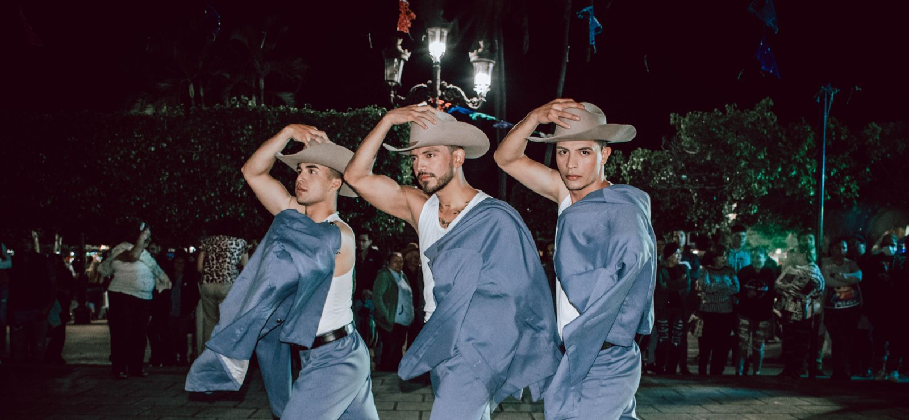
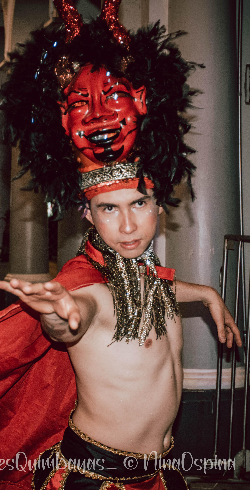

NACIONAL

El folclore nacional colombiano se baila como una expresión viva de la identidad, la historia y la diversidad cultural del país. A través de sus ritmos y movimientos, se transmiten las tradiciones de las distintas regiones, fusionando influencias indígenas, africanas y europeas. Cada danza cuenta una historia, celebra la vida y fortalece el sentido de comunidad, convirtiéndose en un símbolo de orgullo y patrimonio cultural. Bailarlo es mantener viva la esencia de Colombia y compartir su riqueza con el mundo.
- Región Andina
- Costa Caribe
- Región pacífica